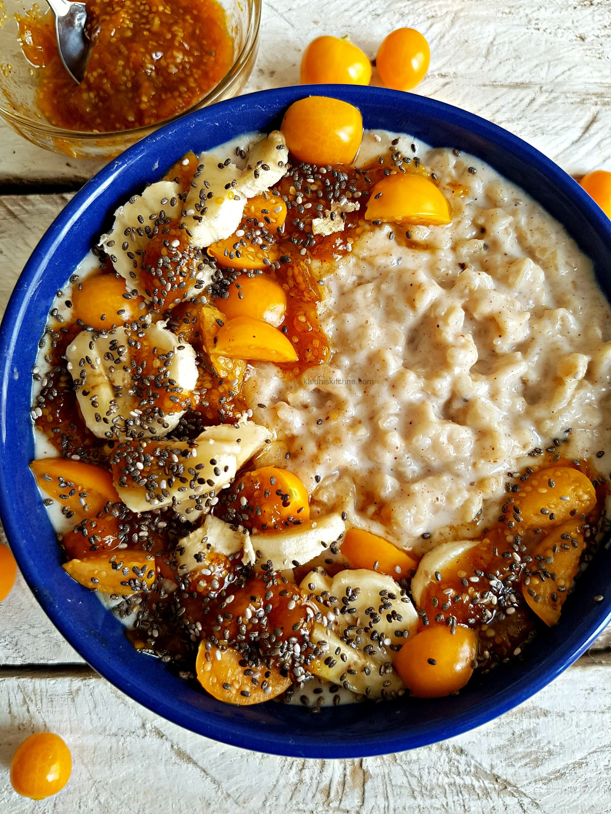

Warrior Oatmeal

Description
This is a great and easy recipe for those warriors who want to conquer
their mornings and greet the battlefield of life with open arms.
Ingredients
- 2 Cups of Water
- 1 Teaspoon of Salt
- 1 Cup of Oats
- 2-4 Eggs
- 1-4 Squares of Dark Chocolate
- 1-2 Bananas
- 1/2 Cup of Greek Yogurt
- 1-2 Tablespoons of Peanut Butter
- Small Sprinkle of Chia Seeds
Steps
- Boil Water in Sauce Pan.
- Bring heat to Medium.
- Add Oats and Eggs into Sauce Pan.
-
Let cook for 5-10 minutes or until water is absorbed by oat/egg mixture.
- Place into bowl that you will use for eating.
-
Add salt, Dark Chocolate, Bananas, mashing and stirring everything.
- Add Greek Yogurt and Peanut Butter.
- Sprinkle Chia Seeds on top.
- Greet Valhalla with a full belly!